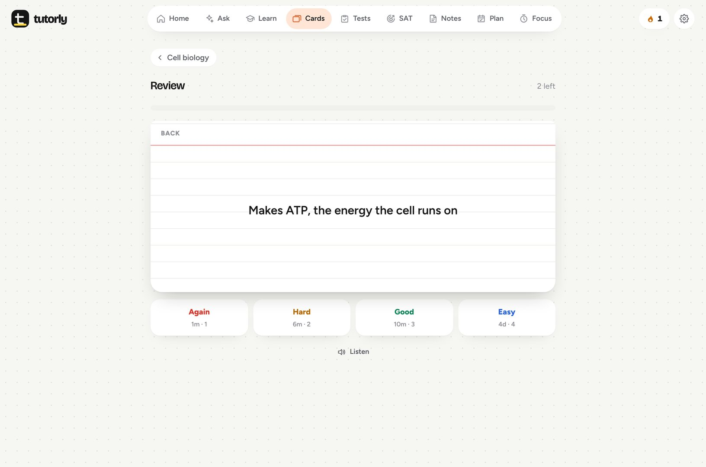
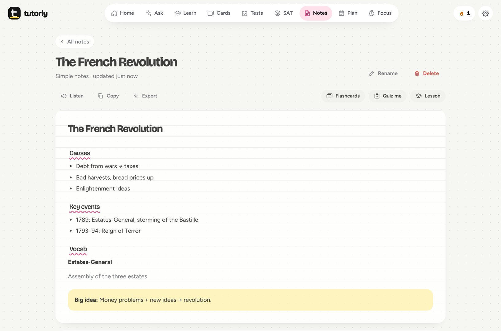
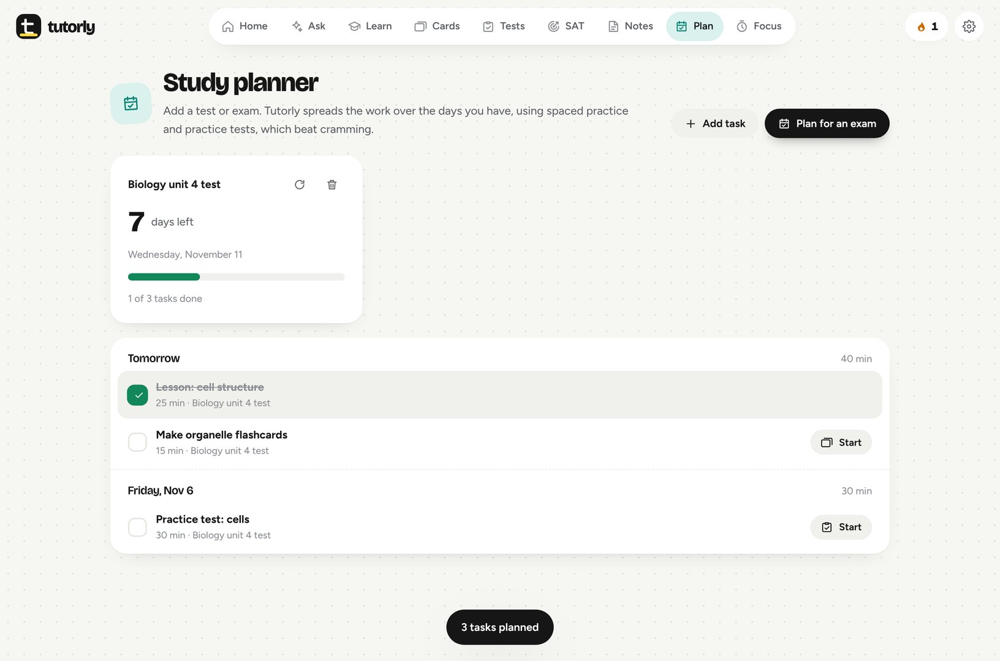

Homework help that shows its work, and checks it.
Any subject, any grade. Tutorly explains every step, double-checks the answer before you see it, then helps it stick with lessons, flashcards and practice tests.
Download for WindowsLearn mode, practice tests and step-by-step explanations are all free. There's nothing to unlock and no ads.
Math runs as real code, then a second check re-solves the problem from scratch. When it isn't sure, it says so.
Hide the answer and reveal one step at a time, or ask for it explained simpler, another way, or with an analogy.
Everything for studying, in one place.
Every tool feeds the next: solve a problem, turn it into flashcards, test yourself, and let the planner fit it all in before your exam.
Homework help
Type it, paste it, or drop in a photo of your worksheet. Math, science, essays, history, languages, code, kindergarten to college.
- Shows how it read your question, so misreads get fixed
- Every answer choice explained, including the tempting wrong ones
- Graphs, real math notation, read-aloud, and follow-up questions
Flashcards
Spaced repetition shows each card right before you'd forget it. Learn and Test modes are free with no limits.
- AI makes cards from notes, photos or PDFs
- Import from Quizlet or Anki

Lessons
Bite-size explanations with a check after each part. Miss one and Tutorly re-teaches it a different way.
Practice tests
Realistic tests from any topic or your own material. Written answers graded fairly, and weak spots tracked.
SAT prep
Digital SAT practice by domain and full timed modules, with the trap behind every wrong choice.
Notes, your way
Simple reads like you wrote it in class. Standard is clean and organized. Deep dive is a full study guide. Every level is just as accurate. Or paste your messy notes to get them cleaned up.

Study planner
Enter your test date and what's on it. Get a day-by-day plan with spaced practice and practice tests, each task one click away.

Focus timer and streaks
Work in focused blocks with short breaks. Every minute counts toward your daily goal and streak.
Three checks before you see an answer.
Most homework apps give a wrong answer just as confidently as a right one. Tutorly is built not to.
Photos are transcribed first, and you see exactly how Tutorly read your question. One click fixes a misread number.
Arithmetic, algebra and science math run as real code. Then the answer is verified a second way: plugging it back in, checking units, re-reading the question.
An independent pass re-solves the problem from scratch. If it finds a mistake, the answer is fixed, and you're told what changed.
Honest note: AI can still make mistakes, especially with blurry photos or unclear questions. When Tutorly isn't sure, it says so, so check it against your class notes.
Free AI from Google. One minute to set up.
Tutorly runs on Google's Gemini AI, which has a free tier. You get your own free key: no subscription, no credit card.
Set it up
- Download Tutorly and open it.
- Click Open Google AI Studio, sign in with any Google account, then click Create API key.
- Paste the key into Tutorly. That's it.
Good to know
Google's free tier has daily limits. Tutorly switches to another free model automatically when you hit one, and flashcards, notes, the planner and the timer work without AI. Your key is encrypted on your PC. On the free tier, Google may use what you send to improve its products, so keep personal information out of your questions.
Questions people ask first.
Is it really free?
Yes. No ads and no paid tier. The AI is Google's free tier, through your own free key.
Which subjects and grades?
All of them: math from arithmetic through calculus, the sciences, English and essays, history, government, economics, world languages, computer science and more, kindergarten through college. Explanations match your grade, in 18 languages.
Isn't this just for cheating?
It's built to teach. Guide me mode hides the answer and reveals one step at a time, lessons check you understood, and every solution ends with a similar problem to try yourself. Follow your school's rules on AI for graded work.
Windows says "Windows protected your PC".
New apps that aren't code-signed yet show that message. Click More info, then Run anyway. Every release is scanned with Microsoft Defender before it's published, and its SHA-256 fingerprint is published next to the download. Tutorly never asks you to turn off your antivirus. If a copy does, it's fake.
What gets sent over the internet?
Only the questions, files and text you send to the AI go to Google's Gemini API. Your decks, notes, tests, plans and history are saved on your PC. No account, no tracking.
Mac or phone?
Not yet. Tutorly runs on Windows 10 and 11.
Start studying smarter tonight.
Version 1.0.0 · Free for Windows 10 and 11.